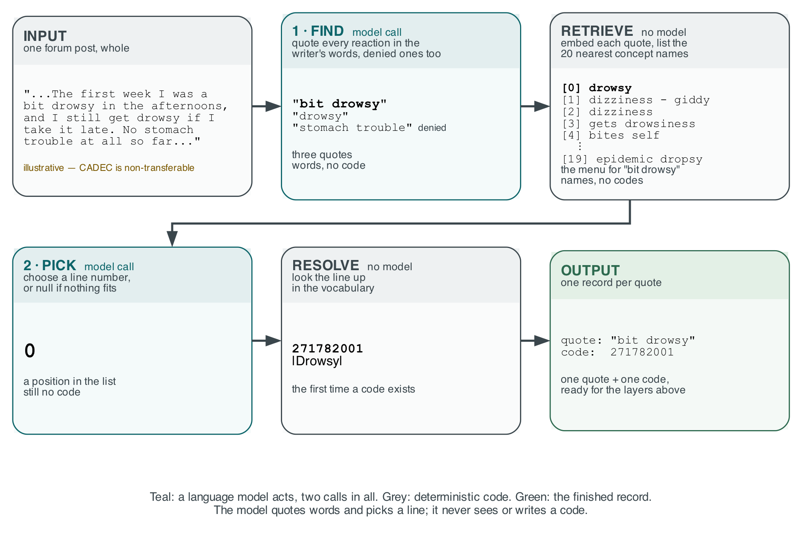
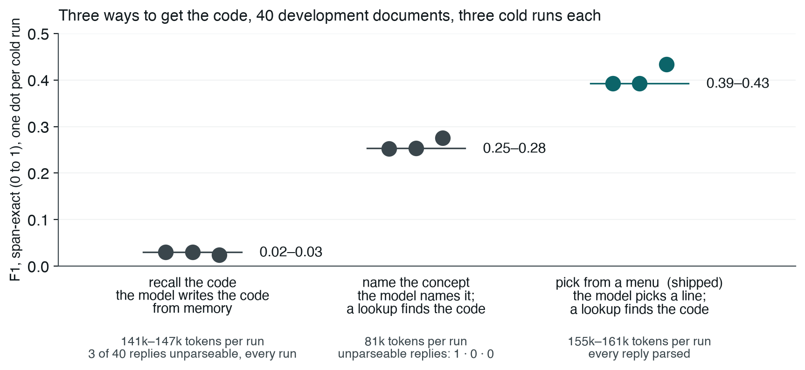
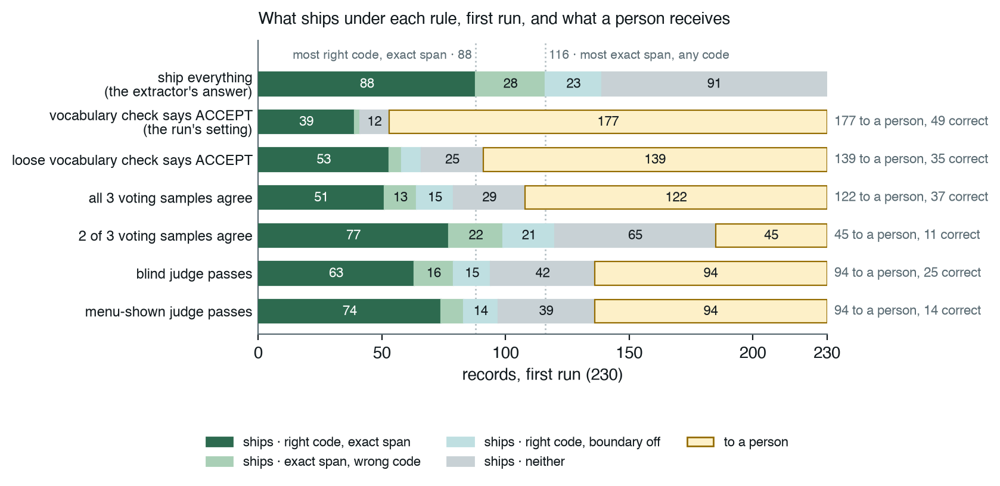
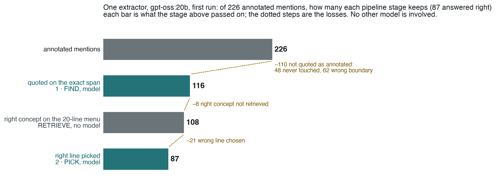
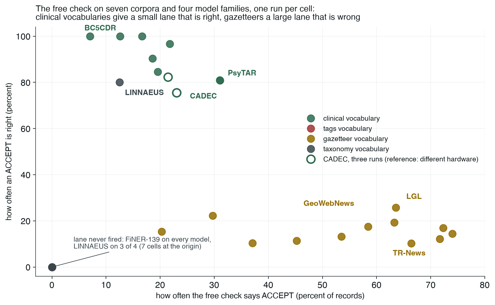

Which reliability layer buys the reliability, and where it stops being worth paying for. Seven rungs on one annotated corpus, then seven more corpora and five model families. The article is docs/article-infoq-CADEC.md; the durable record is docs/decisions.md.
rerun-cadec-d0/d1/d2, 230 / 230 / 238 records, every arm replayed on the same draw.
Its corpus-free files are tracked at runs/archive/consolidated-2026-09-03/, and the
charts on this page read the first draw from a data block that a test pins to those files.
The held-out split was spent once, 60 documents, one run, never re-run. Cross-corpus figures are
matrix.csv. Ranges below are across the three draws.Pharmacovigilance triage. Read an archived patient report, identify each adverse reaction the writer describes as a span of their own words, normalise it to a SNOMED CT code, and route the record: verified, withheld, or to a person. The system reports what a document says. It never asserts that a drug caused an effect.
One record is one mention. The shape below is the schema as built (ladder/schema.py); the audit trail is never scored.
Record
doc_id "ARTHROTEC.107" # which archived post
entity_type "REACTION" # REACTION | DRUG — drugs are span-checked, never coded
text "muscle aches" # the span exactly as written
spans [[104, 116]] # offsets into the source — a record without one is invalid
sct "68962001" # the code, from the vocabulary, never from the model
sct_label "Muscle pain" # the concept the model thinks it chose — checked for free
confidence 1.0 # takes the values 1.0 and 0.99 and carries no information
zone "BAND" # NEW → ACCEPT | BAND | REJECT → VERIFIED | ABSTAINED | ESCALATED
checks {r1_verdict, r1_reason, r0_negated, r3_votes, r4_verdict, r4_menu, withheld, ...}
| Constraint | Why it works |
|---|---|
| 1. Fixed archived corpus only | The runner takes a split identifier, never a string. There is no box to type into, so nobody can point it at their own medication list. |
| 2. A record without a span is invalid | Enforced in the schema and re-checked by rung 1, so an output that is not a citation cannot exist. |
| 3. No causal link asserted | Drug and reaction mentions are extracted independently. The corpus annotations do not assert causation either. |
| 4. Aggregation is out of scope | Counting reaction frequency across reports is what turns annotation into a safety signal. Named out of scope. |
| 5. Withholding escalates, never discards | Refusal preserves the answer and routes the record. Rung 6 is the design intent, not a bolt-on. |
The model is never asked for a code. Two calls per document: find quotes each reaction in the writer's words and flags denied ones; a retriever with no model searches 227,554 keyword-to-code rows and shows a menu of up to 20 concept names; pick returns a line number, or null for "not on this list". The code appears for the first time when the line is resolved. Only where the code comes from was varied; scope was identical in all three shapes.

Figure 1 — the pipeline on one illustrative post (CADEC is non-transferable). Teal: a model call; grey: deterministic code. A code appears only in the last card.
| Shape | Where the code comes from | F1 exact, 3 draws | unparseable | What it showed |
|---|---|---|---|---|
| S0 | Recalled from the model's weights with the label | 0.030 / 0.030 / 0.024 | 3 of 40 every draw | Broken, not weak. Answered null on 16–38% of records; of the codes it committed to, 13–18% exist in no SNOMED release. |
| S1 | The model names the concept; data/keywords.csv resolves it | 0.252 / 0.253 / 0.276 | 0 | Eight to twelve times better than S0 at fewer tokens. |
| S2 frozen | Retrieve a menu per mention; the model picks a line | 0.393 / 0.393 / 0.434 | 0 | The extractor every layer sits on. Leads S1 by 14 points at about twice the tokens: a declared trade. |

Figure 2 — one dot per cold run. Source: rerun/cadec-s0.json, cadec-s1.json, cadec.json.
| Choice inside rung 0 | Measured, and why it stands |
|---|---|
| Dense retrieval over the keyword table | Recall@20 over all 6,595 coded gold mentions: dense 86.1% against lexical Jaccard 61.8%. The gain decomposes as +3.3 from the smaller findings-only corpus and +21.0 from scoring. k stays 20: at 40 the pick lost more than retrieval gained. |
| Menu order is retrieval order | Alphabetising the menu cost 10–12 points of coding accuracy at identical detection. A context-ranked order on FiNER cut the slot-0 attractor and still lost 9 points: the model's own unranked judgement scored higher than what the ranking displaced. |
| No retry inside rung 0 | A retry loop here is rung 2 and would fold rung 2's value into rung 0. Rung 0 proposes up to three labels in one call and stops. |
| Denied mentions are extracted and flagged | CADEC annotates a mention regardless of polarity. Without the [denied] marker the pick declined every denied mention it was shown. |
| A better encoder was rejected | SapBERT raised corpus-wide menu recall 87.0 → 88.4% and lowered F1 on all three paired draws. Its gain lives in a tail the detector never reaches, and the probe that authorised it separated over 1,144 documents while the arm runs on 40. The ceiling is partly this encoder's: an oracle over both reaches 93.6%. |
| Two domain-adapted models did not help | BioMistral-7B as extractor: 3 predictions against 226 gold, greedy decoding answers EOS after {. As judge: 167 of 240 records unjudged. A worked example in the corpus's conventions and the denied-reactions rule were the two largest gains, and neither is medical. |
Pure code, zero model calls. It cannot say a code is right, because the code is not in the source text. It can say a code is wrong, and it can say the vocabulary uses these very words.
| # | Check | Outcome | What was learned replaying it over the gold standard, where every rejection is false by construction |
|---|---|---|---|
| 1 | Schema valid | REJECT | All 16 held-out rejections were schema_invalid: unlocatable spans, not a statable fact, so rung 2 had nothing to say back. |
| 2 | Span grounding — the quote sits at those offsets | REJECT | Model offsets are 19% correct; the quote itself is verbatim 77% of the time, so rung 0 discards the offsets and locates the quote by search. |
| 3 | Negation cue within six tokens | flag | As a rejection it cost 427 gold-correct mentions (4.7%). CADEC codes denied reactions; "so far no gastric problems" is annotated. Flags only. |
| 4 | Code exists — active or retired | REJECT | 11% of CADEC's codes are retired. Active-only existence rejected 413 more gold mentions. Fires 2–3 times per draw on model output, because the model picks from a menu of real codes. |
| 5 | Semantic type — a clinical finding | REJECT | Rejects only on a positive not a finding. On PsyTAR it wrongly rejects 37 correct gold codes such as |Suicide|: the check encodes CADEC's annotation guide, not SNOMED's structure. |
| 6 | Label check — the model's own label names its code | flag | Catches what existence cannot: 82249009 is real, active, and means |California chicken (organism)|. |
| 7 | Outdated — retired with a recorded successor | flag | The outdated outcome is never folded into correct. 0 fired on the held-out run. |
| 8 | Lexical match — the span's words are one of the concept's names | ACCEPT else BAND | "chronic pain" against |Chronic pain|. The one check that separates, and the one that needs the writing and the vocabulary drawn from the same register. |
The gate's own error floor on the gold standard went from 9.3% to 0.13% across those corrections. Do that replay before trusting any new check.
rungs.1.mode is observe: the verdict is recorded and every rung above sees the full set. A filtering rung 1 makes every rung above it unattributable. Only rung 5 is allowed to spend coverage on the verdict. Consequence: rung 2 fires only on REJECT, and rung 1 produces 2–3 REJECTs per draw on model output, so self-correction is barely exercised on any corpus. On PsyTAR, where the semantic check had real work, it fired zero times in three draws: the reject path is effectively dead in production and live only on gold.
The ceiling is the corpus, not the check: replaying rung 1 over the split's own gold puts 32% of annotated mentions in ACCEPT (46% under the looser contained match). A perfect answer set lands two thirds in BAND, and that fraction is the bill the paid rungs were supposed to work through.
Cumulative and in ID order, rung_order [0,1,2,3,4,5,6] read from the manifest. Cost is the first draw's tokens per record; "what it bought" is the range across three.
| # | Layer | Mechanism | tokens / record | What it bought |
|---|---|---|---|---|
| 0 | Extract | Find, retrieve, pick. Two model calls per document; the model never sees a code. | 703 | F1 0.393 / 0.393 / 0.434. Detection 0.52–0.57 exact, coding 0.75–0.76 on what it found. The input to everything above, and its ceiling: no layer can add a mention. |
| 1 | Check | Eight deterministic checks, three lanes, observe mode. | 0 | Did its job. ACCEPT 75.5 / 75.5 / 82.4% correct against BAND 26.9 / 26.9 / 30.4%: a 2.7–2.8× separation for nothing. REJECT 2 / 2 / 3. |
| 2 | Self-correct | One bounded retry, fired only by a REJECT, the failure stated as a fact: "code 999999 does not exist". Re-validated through rung 1. | 5 | Barely exercised. Fired 2 / 2 / 3 times, relocated one quote per draw, corrected nothing. Unmeasured, not refuted. |
| 3 | Vote | Three samples at temperature 0.7 through rung 0's own path, matched by span overlap, majority on the code, a change needs two seen. | 1,785 | Did not help. Changed 25 / 28 / 27 codes, destroyed 2 / 3 / 5 right answers, gained 3 / 2 / 4: net +1 / −1 / −1. The voter is the answerer. |
| 4 | Judge | granite4:micro-h (3.2B) judges gpt-oss:20b. Shipped blind: a quote and nine digits. Arm: shown the menu, asked for best or null. | 365 | Works once shown the menu; nothing reads it. Blind 1.68 / 1.65 / 1.69×; menu-shown 3.65 / 4.23 / 3.44×, and not on this list separates a bad pick from a bad menu. No downstream rung reads r4_verdict. |
| 5 | Refuse | Ship what rung 1 marked ACCEPT; hold the rest, answer preserved. The confidence dial is retired: rung 0's confidence is 1.0 on two thirds of answers, right or wrong. | 0 | A guard, and it held. Ships 53 / 53 / 51 (21–23%) at 0.736 / 0.755 / 0.824; errors per 100 from 62 / 62 / 59 to 6.1 / 5.7 / 3.8. Every point of that is rung 1 acted on. |
| 6 | Person | Simulated mode prices the queue; desk mode applies a resolutions file by span key. Unreviewable spans are counted, not hidden. | 0 | The cost nothing else prices: 177 / 177 / 187 records routed, 77–79 per 100. Minutes are a declared illustration; the count is the measurement. |
spine arm replays rungs 5–6 over rung 1's snapshot at zero model calls. The set that passed the guard differed by one record on the first draw and none on the other two. Nearly everything the free check endorses the judge endorses too — 52 of 53 ACCEPT records are judge passes on the first draw — so a second verdict mostly confirms the first and can only remove records, never recover one.
The rungs are settings of one dial, not steps of a staircase. Read each verdict as a rule over the same 230 records of the first draw.

Figure 3 — dark green: right code on the exact span; light green: exact span, wrong code; light teal: right code, boundary off; grey: neither; amber: to a person. Dotted lines: the most the extractor found.
Three things hold. Any verdict raises the accuracy of what passes, because withholding is a layer's only lever, so yield — right answers over all records — is reported beside accuracy and cannot be flattered. The price differs by verdict: ACCEPT is the most precise and the most expensive, removing 128 errors at the cost of 49 right answers and 177 reviews. The menu-shown judge is the one rule whose F1 beats shipping everything, 0.420 against 0.397. And the verdicts nest rather than add.
The looser contained match wins on yield in all three draws (+0.06) at about three times the errors per 100. The default was not flipped; that trade is the deployer's.
Tokens per record, latency p95, and records routed to a person. A dollar figure needs a price table that shifts under you and hides the question: would you rather spend tokens or human attention? usd is carried alongside and is 0.00 for local models.
The held-out run, once: 844,657 tokens over 758 calls; p95 57.2 s (rung 0), 126.1 s (rung 3), 1.5 s (rung 4); 242 of 314 to a person. Zero timeouts, truncations or parse failures. Every call has a wall-clock budget, 300 s for the extractor, because one call once generated for 25 minutes on a 761-character post; a timeout costs one record, not the run, and is never cached.
Three identical runs of the unchanged extractor differed by four points of F1 at temperature zero. Two draws were byte-identical; the third finished with 98 correct mentions against the pair's 87.
Where all three found the same span they agreed on the code 84% of the time, so what moves between runs is mostly the reading. Four other families run three times each — llama3.1:8b, mistral:7b-instruct, qwen3:8b, granite4:micro-h — returned byte-identical output every time; three FiNER draws of the shipped extractor were byte-identical too. gpt-oss:20b is the only mixture-of-experts model of the five and the only one that varied. The diverging request sent alone eight times returns one reply; it moves only inside a full run. Unexplained. From then on every change was measured on three draws and reported as a range, and a paired bootstrap over documents is understood to price the corpus sample and to be blind to variance between generations.

Figure 4 — the first draw's 226 annotated mentions through the shipped extractor. Teal: a model call; grey: deterministic code.
Once a mention is found the pipeline is reliable: the right concept reaches the menu for 93% of found spans and the model picks it 81% of the time. The loss is at finding. Of 110 missed, 48 were never touched and 62 have the wrong boundary — "extreme rectal bleed" for "rectal bleed" — and figures of speech are read literally. None of the reasons are medical. On the held-out split detection F1 is 0.521 exact and 0.808 on overlap: that is the most any stack on this extractor can ever get right. The one way past it is a second reader, a different family shown the post and the first model's quotes. Not built.
Seven further corpora, five model families, one variable per cell: model.extractor. One draw each at rungs 0–1, justified by byte-identical draws measured on three corpora. Twenty-eight development cells are in matrix.csv; the held-out and qwen3:8b cells are in docs/FINAL-RESULTS.md. CADEC is a reference, not a row: it ran on other hardware, and floating point differs between a CPU-split and a GPU-resident model (23 records against 22 on identical input).
PsyTAR: same forum as CADEC, same task, same vocabulary, different drugs. Full ladder, gpt-oss:20b, three draws, byte-identical.
Self-correction, voting and the judge each routed zero records in every draw; coverage is exactly what rungs 0–1 produce alone. And PsyTAR is where rung 2 should have had work: the semantic check wrongly rejects 37 correct gold codes there, and rung 2 still fired zero times, because rung 1 never REJECTs what the model actually writes.
| Lesson from CADEC | On the other data |
|---|---|
| Layers sort; they do not fix | Agrees. PsyTAR, zero changes in three draws. |
| Start with the free check | Holds where the vocabulary's names are evidence, reverses on gazetteers, never fires on tag names. |
| Ask the model to read, never to remember | Not re-tested; every corpus used the menu. |
| Make repeat runs a validation step | Agrees. Every other family repeated itself exactly; the extractor's one instability elsewhere was refusing a document on one FiNER draw of three. |
| Study the data before adding layers | Agrees, with a change. On CADEC the model loses at reading; on FiNER it read well (detection 0.685) and coded badly (0.446), and its worst error was a habit — the menu's first line, 19.5% of all predictions — traced to a fallback rule, not the model. |
| Self-correction barely fires | Sharpened. Zero times on the corpus where it had work. |
| A fact recorded once will be wrong silently | Repeated. Twelve matrix cells ran with CADEC's prompt on corpora about places, species and diseases; five ran a model their directory name did not claim. Caught only because each run saved the configuration it received. |
Frozen configuration, 60 documents, cold cache, one run id, zero edits before or after: phaseF-test-1, 2026-08-26. Its raw artifacts went with the worktree cleanup of 2026-08-31; the figures stand as recorded in docs/decisions.md.
| Measure | Value | Note |
|---|---|---|
| Records extracted | 314 | 290 scorable gold mentions after exclusions |
| Rung 1 lanes | 72 / 226 / 16 | ACCEPT / BAND / REJECT; all 16 rejects schema_invalid, so rung 2 attempted 0 |
| Right before any check | 105 of 314 | about one in three; 60 of them in ACCEPT (five in six), 45 in the withheld 242 (one in five) |
| Shipped | 72 (23%) | 3.8 errors per 100 against 59.6 for the bare model |
| F1 shipped, span-exact | 0.204 [0.150–0.260] | 0.215 on overlap; detection 0.521 / 0.808; the 22 records the extractor never answered are not counted as correct (a table that did was corrected 2026-09-08) |
| Rung 3 | 8 re-found, 8 wrong | the dev gain of the day did not transfer |
| To a person | 242 (77.1 per 100) | 16 of them carry unlocated spans a span-keyed desk cannot review |
| Rule | Why |
|---|---|
| One scorer, span-keyed | ladder/score.py. Gold is keyed by span, never by position; index-keyed comparison scored a perfect extraction at 0.216. exact is the headline, overlap reported beside it, because a wrong boundary is both a false positive and a false negative. |
| Five outcomes | correct / outdated / modernised / abstained / incorrect. Only correct counts toward precision, recall and F1. The two retired-code outcomes exist and did not fire on the held-out run. |
| Detection × coding | F1 decomposes into whether the span was found and whether the found span was coded right. The two fail for different reasons and are never pooled: unmatched is a detection miss, incorrect a coding miss. |
| Yield beside accuracy | Right answers over all records. Accuracy over shipped records flatters any guard. |
| One denominator per number | Every article figure is one run on one denominator, replays included. The free check's ceiling was 43% over all 9,111 mentions including drugs and is 32% over the split's 226 scorable reactions; the article says which. |
| Three draws, reported as a range | A significance test that sees one generation per configuration cannot see the dominant noise term. A reranker once returned +0.0215 [+0.0000, +0.0433] on one draw; two more gave +0.0087 and −0.0089. |
| Dev for everything; test once | All tuning on 40 development documents. The 60 held-out documents were run once and are named every time they are quoted, because the two do not agree and the difference is not always in our favour. |
| A rate needs its set | Every ledger row carries its denominator and whether the check could run. The judge's agreement with rung 1 moved 100% → 98% → 49% across three comparison sets with identical judge behaviour. |
| Finding | Evidence |
|---|---|
| 1. Layers sort; they do not fix | Three paid layers on CADEC changed net +1 / −1 / −1 answers for about 500,000 tokens a draw; on PsyTAR they routed zero records in three draws. Removing them and replaying refusal changed one record. |
| 2. A free string comparison is the best-value verdict, where it applies | ACCEPT 76–82% against BAND 27–30% on CADEC; 80–100% correct on three clinical corpora across five families; 7–26% on three gazetteer corpora with a larger lane; 0.0% on FiNER by construction. |
| 3. The judge carries signal only when shown what it is judging | 1.7× blind, 3.4–4.2× with the menu, and not on this list tells a failed menu from a failed pick. Nothing reads it. Prompt form is load-bearing for a 3.2B judge: an earlier 2:1 separation lived in a duplicated prompt. |
| 4. Never ask the model for an identifier | S0 invented 13–18% of the codes it committed to and scored ten times worse than naming the concept; the menu shape scored 0.39–0.43. |
| 5. The ceiling is detection, and no layer can lift it | Every layer checks, re-asks, votes on, judges or withholds an answer the extractor already gave. Held-out detection F1 0.521. |
| 6. Reproducibility is a model-selection choice | Four dense families byte-identical over three draws; the one mixture-of-experts model varied by four points of F1 and, on FiNER, by refusing a whole document on one draw of three. |
| 7. Rungs that pass every test can be doing nothing | Three layers write a verdict nothing reads. A span filter added to rung 0 removed rung 1's rejection class and rung 2's trigger with it. Voting overwrote codes without re-validation and exact F1 moved 0.204 → 0.204 when fixed: the metric cannot see an unwarranted answer. |
| 8. A fact recorded once will be wrong silently | Twelve cells with the wrong prompt, five with the wrong model, a 42.4% occupancy printed under every matrix table for a day, a "v3" corpus label in four places. Each caught by a second, independent record of the same fact. |
Every layer passed its own tests. The defects that mattered sat between the layers and inside the metric. Three small tools came out of that, each written from a defect that reached a rented GPU first.
| Tool | The question | When | What it caught |
|---|---|---|---|
gatecheck | Should this corpus be run at all? The free check's ceiling from gold and the vocabulary alone. | before booking a card | FiNER 0.0% predicted, 0.0% on five models; LINNAEUS 4.8% flagged thin. Every measured lane sat at or below its prediction. |
crosscheck | Is the arm wired as declared? Twelve facts read back from an independent source. | first line of every run | Split ids from the wrong corpus, few-shot ids outside the pool, a prompt naming the wrong entity, a model name that resolves to nothing. |
stagecheck | Did the run mean anything? Records the bet a stage makes and the records it could not judge. | after | Its own package, no dependencies, knows nothing about corpora on purpose. |
Detail: docs/three-checks.md.
| Risk | Outcome | What was measured |
|---|---|---|
| No working vocabulary lookup | Resolved | A local RF2 release indexed to SQLite, no network in the loop. The fallback, OLS4, calls 23.9% of CADEC gold nonexistent (100% of drug mentions) and is refused for a run; a rejection rate is never reported without its backend. |
| Judge shares the extractor's blind spots | Materialised, then reframed | The blind judge approved fabricated and correct codes alike. A different family did not help until the judge was shown the menu; the third family tried (BioMistral) could not return the JSON. |
| Check thresholds tuned on test | Moot | The confidence dial never separated anything and is retired; no threshold exists to tune. |
| Contamination inflates rung 0 | Accepted | CADEC is public since 2015. It inflates the bare model and biases every gain here downward. Stated in the article. |
| Gold-matching rule argued mid-project | Resolved | One scorer, span-keyed; "the predicted code is in the gold code set" for the 2.8% of post-coordinated mentions. |
| Two machines, two experiments | Materialised | Identical manifest, corpus and seed: 23 records on one machine, 22 on another. CADEC's row is a reference beside the matrix, not a cell of it. |
| Human timing sample too small | Descoped | No reviewer session was timed. Human cost is the count routed; minutes per record is a declared illustration and says so on every row. |
| Numbers quoted from another owner's work go stale | Materialised | The matrix printed 42.4% for CADEC's lane for a day after the replay said 32%. Found by reading, not by a check; there is still no second source for a number quoted across owners. |
rung_order in the manifest, renumbered 2026-08-23 so ID equals position. Entries in the decision log before that date use the old ids (3→2, 5→3, 2→5).observe by default; gate restores the old flow and confounds every rung above.off in the shipped manifest. ranked and shuffled are pinned one-key diffs; shuffling is safe for the judge, which sees one record per call, and was unsafe for rung 0's batched pick.lexical_mode stays exact. contained wins yield 3/3 at about 3× the error rate; the owner's call, not flipped.manifest.model; the client carries no default and raises on a missing entry. Rung 4 must be a different family. Remote providers are refused without LADDER_ALLOW_REMOTE=1 because prompts carry corpus text.| Item | State |
|---|---|
| A second reader to lift the detection ceiling | Proposed in the article; not built. Its additions would be proposals needing the same measurement as the extractor's. |
Flip lexical_mode to contained | Owner's call. Yield +0.06 on all three draws at ~3× errors per 100. |
| Merge the slot-0 branch | Done and unmerged on claude/reliability-ladder-b4-slot0-7784eb: the attractor was a fallback rule writing menu line 0, not the model. |
| Verdict-overlap section in the tracked report | The nesting counts (52 of 53) are a scratch computation; should join ladder.analysis with a test before submission. |
| Five-model sweep on the base footing | Registered, not run. The earlier five-model lane figures predate the re-run and are not quoted. |
| Prompt blocks for the four re-run arms | Written from each corpus's gold and re-run; a manifest.template.json that fails loudly on each of the nine things a corpus must declare is the standing recommendation. |
| A timed rung 6 session | Descoped. The count is the cost. |
| RxNorm, openFDA, AMT coding, n2c2, MIMIC | Out of scope, as before: no drug code is scored, and no corpus with a per-person agreement was planned around. |
Three layers, each needing strictly more than the one before. Detail in docs/REPRODUCE.md.
# 1 · re-score from what is tracked — any machine, no corpus, seconds
PYTHONPATH=. python3 scripts/score_matrix.py --dir runs/archive/matrix-2026-09-07/matrix
PYTHONPATH=. python3 scripts/reproduce.py # five gold-only findings
.venv/bin/python docs/figures/make_infoq_figs.py # redraw the figures from rerun/cadec.json
.venv/bin/python -m pytest tests/test_runs_archive.py tests/test_infoq_figs.py tests/test_plan_html.py -q
# 2 · re-derive the reports from a raw run — needs the corpus and out/<run>.*
.venv/bin/python scripts/rerun_analysis.py --runs out/rerun-cadec-d0 out/rerun-cadec-d1 out/rerun-cadec-d2 \
--arms judgemenu judgeshuffle lexarm spine --out runs/archive/consolidated-2026-09-03/rerun/cadec
# 3 · re-run the rungs — ollama, gpt-oss:20b + granite4:micro-h, ~1 h per CADEC draw
PYTHONPATH=. python3 scripts/gatecheck.py --manifest manifest.finer.json # before booking a card
PYTHONPATH=. python3 scripts/crosscheck.py --manifest manifest.finer.json # first line of every run
scripts/consolidated_rerun.sh cadec d3 # a fresh named cache, base cold, arms on it
Pick a dataset, a path a record can take, and an example. Its document opens the way the Workbench's Live tab draws one: rung 0 against gold, mention by mention, then every record of the document by rungs 1 to 4 and the person column with the six shipping rules. The example's row is lit; click any keyword to follow another. Nothing is typed in: scripts/plan_demo.py calls the Workbench's own document builder over the archived run, and a test cross-checks every record against the tracked ledger.
Each figure carries one finding and nothing else. Every width, height and position is a count from the run's tracked files, and tests/test_plan_html.py recomputes them; nothing is typed in and nothing moves.
The free check sorts the batch once; the paid rungs change what a record says, never where it goes; refusal is the only rung that reshapes the picture. Each box is a rung, what it does and what it costs per record; the streams between them are records, to scale; a dashed route is one the ladder allows and this run did not take. Three datasets on one scale. Dark ends of the last two bars are the right answers among them.
FiNER's ACCEPT lane is empty by construction, so its ship route is dashed at 0; PsyTAR produced no REJECT, so rung 2 had nothing to retry. Sources: the run ledgers (CADEC, FiNER) and the published stripped records (PsyTAR).
The right-answer count is flat through three paid rungs that spend nearly everything; refusal then decides how many of those right answers ship and how many a person receives.
Line: right answers on the stack after each rung (the right code on the exact span). Bars: tokens per record charged by that rung. Green: right answers that ship; amber, dashed: right answers held for a person. Source: each run's results.csv.
Any verdict raises the accuracy of what ships, because withholding is a layer's only lever; every gain in accuracy is paid in yield. The menu-shown judge is the one rule that beats shipping everything on both. CADEC, first draw, the same 230 records under eight rules; dot size is how many ship.
Source: rerun/cadec.json → shipping_rules, first draw. The dashed line is the extractor's own right-answer count: no rule can ship more.
Clinical vocabularies give a small lane that is right; gazetteers give a large lane that is wrong; on tag names the lane never fires. One dot per model and corpus; CADEC's three draws hollow.

Drawn by docs/figures/make_infoq_figs.py from matrix.csv and rerun/cadec.json. The article dropped this chart because its section is about whether the lessons agree, not about the numbers; it is the clearest picture of the cross-corpus result and belongs here.
What runs where, what is committed, and what must never leave the machine. As built, 2026-09-09.
out/; the corpus-free four per run — aggregates, ledger, results, manifest — and every derived report are tracked. Examples in prose use annotated spans and vocabulary labels only, never a sentence of a CADEC post.
scripts/preflight.py scans the working tree and git history for corpus text and key-shaped strings, and CI runs it before the merge. It cannot see an unzip -d data/ that leaves an archive untracked and unignored in the tree; .gitignore is data/* with one exception for the frozen split ids, and git status --short before every git add is the manual half. tests/test_runs_archive.py refuses records, state and calls files under runs/archive/ and checks every ledger row for text-carrying keys.
| Plane | Runs where | Holds | Why it cannot move |
|---|---|---|---|
| Data plane | your machine, or a rented card | Corpus text, the SNOMED RF2 index, the models through ollama, the named LLM cache per draw, the raw run under out/ | Licence forbids redistribution; prompts carry corpus text, so a remote provider is refused without an explicit flag. |
| Results plane | git | runs/archive/: the consolidated re-run's 36 runs × four corpus-free files, the matrix's 59 cells, matrix.csv, the derived reports under rerun/; docs/decisions.md; the figures drawn from those reports | Derived numbers are ours to publish. A reader can open every number's source from git; recomputing a report needs the raw run and the corpus. |
| Presentation plane | GitLab Pages, from CI | This page and the figures. Nothing else runs there. | Static, so it cannot hold anything private and cannot sleep mid-demo. The GitHub mirror is the address the article prints. |
Figure — the three planes. Corpus text stays left of the dashed red line on every machine; only the corpus-free four per run and what is derived from them cross into git.
Since 2026-09-03 (ladder/trace.py) every run writes per-rung artifacts beside the ledger, and ladder/analysis.py derives every article number from them. Do not write scratch scripts for numbers the module can produce; extend it, with a test.
| File | Tracked? | What it is |
|---|---|---|
<run>.r<N>.records.jsonl | no | The record set as rung N left it. Carries spans and text. |
<run>.state.jsonl | no | One row per record per rung: code, span, zone, verdicts, changed_this_rung, outcome against gold under both pairings. unmatched is a detection miss, incorrect a coding miss, never pooled. |
<run>.r<N>.calls.jsonl | no | Every model call: full prompt, raw reply, normalised reply, cost, cached flag, document. The bulk of a run. |
<run>.ledger.jsonl | yes | One row per record per rung: ids, zone, verdict, reason, tokens, latency, usd, human minutes, the denominator the row belongs to, and whether the check could run. |
<run>.aggregates.json | yes | Each rung's aggregate, the models, the LLM cache directory, git sha at start, dirty flag. |
<run>.results.csv · <run>.manifest.json | yes | The per-rung summary table, and the configuration as run — not as intended. |
rerun/cadec.{md,json} and siblings | yes | scripts/rerun_analysis.py over the draws and arms: rung 0 per draw, the error budget, the lanes, rung 3's changes, the judge arms, the shipping rules, cost, consensus, gold-lane occupancy, provenance. |
reliability-ladder/ ├── ladder/ run.py (the runner) · schema.py (the record) · corpus_*.py (one adapter per corpus) │ registry.py (local SNOMED index) · vocab.py · vocab_*.py · llm.py (cached client, models.yaml) │ ledger.py · score.py · trace.py · analysis.py · provenance.py · keywords.py · embed.py ├── ladder/rungs/ r0 … r6, one file per rung; r7 is the type-compatibility check arm ├── ladder/checks/ gate.py and cross.py, behind scripts/gatecheck.py and scripts/crosscheck.py ├── schemas/ runner.py · vocabulary.py — the two contracts that exist (adapter.py was never written) ├── manifest*.json one manifest per corpus; every arm is a pinned one-key diff of its base ├── data/ GITIGNORED except data/splits/*.json (document ids only) ├── runs/archive/ the tracked, corpus-free run files every published number comes from ├── matrix.csv scripts/score_matrix.py over runs/archive/matrix-2026-09-07/ ├── scripts/ preflight · score_matrix · reproduce · rerun_analysis · the run and re-run protocols · r6_desk ├── tests/ ~1,150 tests against stubs — no network, no keys, no corpus ├── docs/ the articles, decisions.md, REPRODUCE, RUNNING, FINAL-RESULTS, three-checks, figures/, this page └── .gitlab-ci.yml preflight → licence-scan → wiki → tests → pages
| Status | Paths | Reason |
|---|---|---|
| COMMIT | ladder/ schemas/ scripts/ tests/ docs/ manifest*.json | The method is the contribution. Code carries no corpus text. |
| COMMIT | runs/archive/ · matrix.csv | The one tracked exception to the scratch rule. Aggregates, ledger, results, manifest per run; matrix cells stripped of quoted text. A test pins the set and refuses anything text-carrying. |
| COMMIT | docs/figures/*.png with their .dot or script | Every InfoQ figure reads the tracked report; a test refuses hand-typed counts in the script. |
| COMMIT | requirements.txt, pinned | CI is python:3.12-slim with this file and pytest and nothing else. A test that needs a local-only extra stubs it or skips explicitly. |
| NEVER | data/cadec/ and any derivative with post text | Non-transferable licence. Includes notebook output cells. |
| NEVER | out/ · .llm_cache*/ · ladder/cache/ · data/keywords.csv · data/exclusions.csv | Records, state rows and call traces quote the corpus back verbatim. The keyword table and exclusions derive from the affiliate-licensed release and the annotations. |
| NEVER | API keys, .env | Preflight scans for key-shaped strings; local models need none. |
| CHECK | data/meddra_codes.csv | MedDRA is subscription-licensed. Only a 10-row example is committed, for tests. Nothing retrieves from it; meddra_mode is reference and rung 0 does not read it. |
python3 -m venv .venv && .venv/bin/pip install -r requirements.txt pytest # preprocessing — five steps, in this order; data/ and ladder/cache/ are gitignored python -m ladder.registry --build # RF2 → SQLite index python -m ladder.keywords --build # data/keywords.csv python -m ladder.clean --build # data/exclusions.csv python -m ladder.embed --build # ladder/cache/keywords.* (dense S2) python -m ladder.run init # freeze the splits # two checks before any GPU time, a second each, no model calls PYTHONPATH=. python3 scripts/gatecheck.py --manifest manifest.finer.json PYTHONPATH=. python3 scripts/crosscheck.py --manifest manifest.finer.json # the run — ollama, gpt-oss:20b + granite4:micro-h, ~14 GB VRAM PYTHONPATH=. python3 -m ladder.run --manifest manifest.finer.json ladder --split test --limit 3 --plain # a draw is a NAMED cache directory: base cold, arms on the same cache scripts/consolidated_rerun.sh cadec d3 scripts/rerun_spine.sh # rungs 5–6 over the r1 snapshot, zero model calls # run the tests the way CI does — a green local suite is not a green pipeline python -m venv /tmp/civenv && /tmp/civenv/bin/pip install -r requirements.txt pytest /tmp/civenv/bin/python -m pytest tests/ -q -m "not integration" python3 scripts/preflight.py # before any commit; CI runs it with --history
max_tokens and reasoning_effort and written to disk. A cache that survives a parameter change is a stale result, which is how a re-run of S0 once served an old truncated entry. A timeout is never cached: it is a property of the run, not the question. Arms replayed on a draw's cache add no rung 0 traffic, so their p95 includes cache hits and is never compared to the base's.
| Job | Stage | What it blocks |
|---|---|---|
preflight | check | Corpus text or a key-shaped string anywhere in the tree or the history. Not allow_failure: a breach stops the pipeline. |
licence-scan | check | Any of the paths that must never be tracked appearing in git ls-files. |
wiki | check | A broken [[link]] or an orphan page in docs/wiki/. |
tests | test | pytest -m "not integration" on python:3.12-slim with requirements.txt only. It has gone red twice on tests that passed on every developer machine: one shelled out to git, two built a real embedder. |
pages | deploy | Copies docs/plan.html to public/index.html with docs/assets and docs/figures. Static only; no Python runs there. |
| Contract | File | Guarantees |
|---|---|---|
| Runner | schemas/runner.py | Every rung is apply(records, sources, cfg) -> records. Rungs mutate zone, reason, checks and provenance, and log to the ledger. Order is configurable, so ordering is a testable ablation. |
| Vocabulary | schemas/vocabulary.py | A global resource injected once per run, not a per-item field. Two SNOMED backends that are not interchangeable: local-rf2 is the default; ols4 is lossy and refused for a run. |
| Adapter | never written | A new corpus imitates the shape corpus.py exposes rather than conforming to a declared interface. That absence is why the first port took sixteen edits, and why a corpus now has nine things to declare with no list of them but crosscheck. |
manifest.json is append-only.docs/decisions.md, as you go. It cannot be reconstructed afterwards; it is the article's raw material and the source of every date on the Iterations tab.Every version of this plan and every measured turn since, what changed and why. Newest first. The dated entries are the index into docs/decisions.md, which is the durable record.